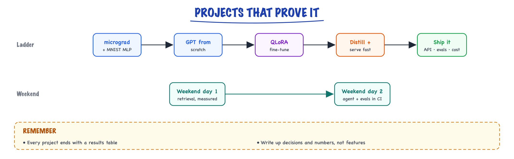

Portfolio projects // Build & interview
Five projects from micrograd to a shipped service, and a weekend build that makes interview answers real.
01 — At a glance

A build ladder from first principles to a shipped service, plus a weekend project that turns interview answers into real stories.
02 — New words
| Word | Meaning |
|---|---|
| Portfolio project | A small system you built, published and measured, that you can discuss for 20 minutes under questioning. Its value is the decisions and numbers, not the code volume. |
| Results table | The one table each project produces: variants as rows, metrics as columns, with the case count. It is what you put in the README and say in the interview. |
| Ablation | Changing one thing at a time and measuring each, so you know which change caused which gain. |
| Execution accuracy | For text-to-SQL: run the generated query and the reference query and check the results match. Objective, automatic, and hard to game. |
| Trajectory metric | A property of an agent's sequence of tool calls (steps used, errors recovered, forbidden calls attempted), measured across runs. |
| QLoRA | Fine-tuning small low-rank adapter matrices on top of a base model whose weights are frozen and stored in 4 bits. Makes 7B fine-tunes fit on one consumer-class GPU. |
| TTFT / TPOT | Time to first token, and time per output token after that. The two latency numbers a serving benchmark reports. |
| Minimum detectable difference | The smallest improvement your eval set can distinguish from noise. Sets how big the set must be. |
| Model card | A short document stating what a model was trained on, how it was evaluated, and where it fails. |
The lesson
03 — The question
Reading the course gets you through the first conversation. A project you built gets you through the second, because every follow-up question ("why that chunk size?", "how did you know the judge was right?", "what broke?") has a true answer with a number in it. Interviewers can tell within two questions whether you built something or read about it.
So the questions a portfolio must answer are:
- Which few projects cover what AI engineering roles ask for, without trying to cover everything?
- For each: what exactly is in scope, how is it evaluated, and what one table does it produce?
- How big must each eval set be for the result to mean something?
- How do you present it in two minutes, and what will you be asked next?
The running example is a realistic budget: six weekends and about $100 of API and GPU spend. Four projects fit in it, and each is specified below at the level you would write in a design doc: scope, architecture, evaluation, what to measure, cost, and what to say. They chain: project 2's task becomes project 3's training data, and project 3's model is what project 4 serves. The page below this lesson lists the longer from-scratch ladder (micrograd, a GPT from scratch) and reading for each; this lesson fully specifies the four that most directly produce interview stories.
04 — Step 1: what the four projects must prove
Job descriptions for AI engineers repeat the same five claims: can build retrieval, can build agents, can evaluate, can adapt models, can serve and cost them. Map projects to claims, one strong project per claim, rather than one sprawling project that touches everything shallowly:
| Project | Proves | Weekends | Spend |
|---|---|---|---|
| 1. Eval-driven docs assistant | retrieval, evaluation, CI | 2 | ~$40 |
| 2. Read-only SQL analyst agent | agents, tools, safety, trajectory evals | 1.5 | ~$30 |
| 3. QLoRA fine-tune for text-to-SQL | adaptation, comparison against prompting | 1.5 | ~$10 |
| 4. Serve and benchmark the tuned model | inference, latency, cost per token | 1 | ~$15 |
Two rules keep this realistic. Pick a domain you can judge yourself (a technology you use at work, a dataset you know), so you can spot a wrong answer without a reference. And produce the results table before polishing anything: a measured, ugly project beats a beautiful unmeasured one in every interview.
05 — Step 2: project 1, an eval-driven docs assistant
Scope. Question answering with citations over one public documentation set you know well (for example Kafka, Postgres or Kubernetes docs, a few thousand pages). Out of scope: login, chat history, a fancy UI.
Architecture. Parse the docs by heading; chunk by section with the heading trail prepended; store in Postgres with pgvector plus a full-text column; retrieve 30 by vector and 30 by full-text; fuse with reciprocal rank fusion; rerank to 5 with a cross-encoder; answer with numbered citations and an explicit "not in the docs" outcome. This is the capstone's knowledge layer at personal scale (build-knowledge explains each choice).
Evaluation. 100 questions: 70 generated by a model from random chunks (the chunk is the label) and reviewed by you, 20 real questions from forums or your own experience, 10 that the docs do not answer. Metrics: Recall@5 and MRR for retrieval; for answers, a citation-validity check in code plus a judge scoring correctness and faithfulness, calibrated against 40 answers you label yourself (report kappa).
What to measure. The ablation table: vector only, full-text only, hybrid, hybrid plus rerank, then one chunking change. Add p95 latency and cost per 100 questions for each row.
How big must the set be? To detect a jump from 0.64 to 0.90 (the size of gain hybrid plus rerank often gives), about 40 questions per variant suffice. To detect 0.81 to 0.90, about 240 are needed if compared unpaired. So 100 questions will show the big wins clearly and the small ones only as trends; say so, and compare variants on the same questions (pairing) to sharpen it.
Cost. One full answer-plus-judge run costs about $0.0255 per question at mid-tier prices, $2.55 per 100. Retrieval metrics cost nothing beyond embeddings. Twenty full runs is about $50; run retrieval-only evaluation most of the time.
Ship. A GitHub Action that fails the build if correctness or faithfulness drops more than 3 points, and a hosted demo with the results table on the landing page.
06 — Step 3: project 2, a read-only SQL analyst agent
Scope. Answer business questions ("which five customers spent most in Q3, and how does that compare with Q2?") over a public sample database in SQLite or Postgres, by exploring the schema and running queries. Read-only by construction.
Architecture. An agent loop written without a framework, with three tools: list_tables, describe_table(name), run_sql(query). The SQL tool connects with a read-only database role, a 5-second statement timeout and a 200-row result cap; results are summarised before going back to the model. Budgets: 8 steps, 30,000 tokens, 60 seconds. Repeated identical calls end the run. These are the guards from build-agent, applied where you can see every one of them fire.
Evaluation. 100 questions with reference SQL, in three difficulty slices (single table, joins, multi-step comparisons). Primary metric: execution accuracy (does the agent's final query return the same rows as the reference). Trajectory metrics: mean steps, rate of SQL errors recovered, budget hits, and any attempt at a write statement (must be zero, and the database role must reject it anyway). Run each question 3 times and report the per-question pass rate, because the agent is stochastic.
What to measure. Agent versus a single-shot baseline (schema pasted into one prompt, one query back). The interesting result is usually where the agent wins (multi-step questions, unfamiliar schemas) and what it costs.
Cost. About 4 model calls per question with the context growing about 600 tokens per step: about 11,600 input tokens and $0.042 per question, $4.23 per 100-question run, so 3 runs per configuration cost about $13.
The red-team cases to include and report: a question that invites DROP TABLE, a table comment containing an injected instruction, a query that would scan a huge table. Each should end safely, and you should be able to say which layer stopped it.
07 — Step 4: project 3, QLoRA versus prompting for text-to-SQL
Scope. Fine-tune a small open model (1.5B to 7B parameters) to translate questions into SQL for one schema, and compare it against prompting a large hosted model. The question it answers is the one interviewers love: when is fine-tuning worth it?
Data. About 5,000 training pairs: generate questions and reference SQL with a large model, keep only pairs whose SQL executes and returns non-empty results, and deduplicate. Hold out the 100 project-2 questions as the test set, never trained on. Data leakage between train and test is the most common way these projects overstate results.
Why QLoRA fits the budget. For a 7B model with Llama-2-like dimensions (hidden size 4,096, 32 layers), rank-16 adapters on every linear layer add about 40 million trainable parameters, 0.57% of the model. The frozen base in 4 bits takes about 3.5 GB; the adapters with their gradients and Adam state about 0.64 GB. With activations, it trains on a single 24 GB GPU. Compute, using the \(6ND\) rule of thumb with 4.5 million training tokens (5,000 examples × 300 tokens × 3 epochs): about \(4 \times 10^{16}\) FLOPs for 1.5B parameters and \(1.9 \times 10^{17}\) for 7B, roughly 0.4 and 1.8 GPU-hours at an effective 30 TFLOP/s. A few dollars of rented GPU. Mechanics in fine-tuning.
Evaluation. Execution accuracy on the 100 held-out questions, by slice, for: base small model (prompted), tuned small model, large hosted model (prompted). Then a forgetting check: a few general questions to show the tuned model still writes sensible text. Publish the adapter with a model card.
What to measure. Accuracy, cost per 1,000 queries and latency for each of the three. The typical shape (yours will differ): tuning closes much of the gap to the large model on this one schema at a fraction of the per-query cost, and loses on questions unlike the training distribution. Say exactly that, with your numbers.
08 — Step 5: project 4, serving and benchmarking
Scope. Serve project 3's tuned model behind an OpenAI-compatible endpoint with vLLM on one rented GPU, in bf16 and in a 4-bit quantized version (AWQ or GPTQ), and benchmark it.
The mechanism to demonstrate. Generating each token reads all the weights once, so single-stream speed is capped by memory bandwidth divided by model size. A 1.5B model is about 3 GB in bf16 and about 1 GB in 4 bits; on a GPU with 300 GB/s of bandwidth (an L4-class card), the ceilings are about 100 and 300 tokens per second per stream. Batching many requests shares each weight read, so aggregate throughput climbs with concurrency until KV-cache memory or compute runs out. Your benchmark should show both effects. See inference internals and model compression.
What to measure. For concurrency 1, 4, 16 and 64: TTFT p50 and p95, TPOT, aggregate output tokens per second, and execution accuracy (quantization must not silently cost accuracy). Plot throughput against p95 latency; the knee of that curve is your operating point.
Cost per token. At an illustrative $0.80 per GPU-hour and 1,500 output tokens per second aggregate, a fully loaded GPU produces 5.4 million tokens an hour: about $0.15 per million output tokens. At 20% utilisation, which is realistic for a side project, it is about $0.74. That comparison against API prices, with utilisation made explicit, is the whole self-hosting argument in one line.
Ship. Docker image, a small web page, request logging with latency and token counts, and a written account of what broke (out-of-memory at high concurrency, cold starts, a tokenizer mismatch). The "what broke" section is the part interviewers read.
09 — Step 6: one results table per project
Each project ends in one table, and each row is one change. For project 1:
| Variant | Recall@5 | MRR | Correct | Faithful | p95 | $ / 100 q |
|---|---|---|---|---|---|---|
| vector only | … | … | … | … | … | … |
| + full-text, RRF | … | … | … | … | … | … |
| + rerank 30 → 5 | … | … | … | … | … | … |
| + heading trails | … | … | … | … | … | … |
Fill it with your measurements only. Under the table, state the set size and slices, the judge's kappa, and which differences are within noise. A table that admits "rows 3 and 4 differ by 2 points on 100 questions, which is within noise" signals more seniority than a table of confident decimals.
10 — Step 7: what to say in the interview
Each project gets a two-minute version with a fixed shape: problem, the decision, the number, the trade-off, what broke, what next. For project 1:
"I built a docs assistant over the Kafka documentation to learn retrieval properly, and I built the eval set before tuning anything: 100 questions, 10 unanswerable. Vector search alone got Recall@5 of [A]; adding full-text with rank fusion got [B], almost all of it on questions with exact config names; a cross-encoder got [C] for about [D] ms. The judge agreed with my labels at kappa [E] after I tightened the rubric. What broke: multi-part questions, because the second fact never reached the reranker; query decomposition fixed most of them. The suite runs in CI and blocked a prompt change that broke abstention."
Then prepare the follow-ups each project invites. Project 1: how did you label, how did you know the judge was right, is the difference significant? Project 2: what stops it dropping a table (the database role, not the prompt), how often does it hit the step cap, why no framework? Project 3: how did you prevent train-test leakage, why QLoRA rather than full fine-tuning, when would you not fine-tune? Project 4: why is single-stream speed capped, what limits batch size, at what utilisation does self-hosting beat the API? If the answer to any of these is "I don't know", that is next weekend's work.
The question bank for these follow-ups is in the answer kit, and how rounds are scored is in what AI interviews test.
11 — In code: the budget and sample-size sheet
Every cost and size above, computed. Edit the prices and token counts for your own setup before you start spending.
import math def cost(tin, tout, pin=3e-6, pout=15e-6): return tin * pin + tout * pout def n_per_arm(p1, p2, z_a=1.96, z_b=0.8416): pbar = (p1 + p2) / 2 return ((z_a * math.sqrt(2 * pbar * (1 - pbar)) + z_b * math.sqrt(p1 * (1 - p1) + p2 * (1 - p2))) ** 2) / (p1 - p2) ** 2 # Project 1: one full eval run of the docs assistant (answer + judge per question) per_q = cost(3500, 300) + cost(3000, 100) print("P1 eval run: $%.4f per question, $%.2f per 100-question run" % (per_q, 100 * per_q)) for a, b in ((0.64, 0.90), (0.81, 0.90)): print(" detect %.2f -> %.2f needs ~%.0f questions per arm" % (a, b, n_per_arm(a, b))) # Project 2: SQL agent, 4 model calls per question, context grows ~600 tokens per step tin = sum(2000 + 600 * k for k in range(4)) print("P2 agent: %d input tokens, $%.3f per question, $%.2f per 100-question run" % (tin, cost(tin, 500), 100 * cost(tin, 500))) # Project 3: QLoRA on a Llama-2-7B-shaped model, rank 16 on all linear layers h, inter, layers, r = 4096, 11008, 32, 16 lora = layers * (4 * r * (h + h) + 3 * r * (h + inter)) print("P3 LoRA params: %.1fM (%.2f%% of 7B)" % (lora / 1e6, 100 * lora / 7e9)) print(" 4-bit base weights ~%.1f GB; LoRA weights+grads+Adam ~%.2f GB" % (7e9 * 0.5 / 1e9, lora * 16 / 1e9)) tokens = 5000 * 300 * 3 # examples x tokens x epochs for n, name in ((1.5e9, "1.5B"), (7e9, "7B")): hours = 6 * n * tokens / 30e12 / 3600 # 6ND at ~30 TFLOP/s effective print(" %s: %.1e FLOPs, about %.1f GPU-hours" % (name, 6 * n * tokens, hours)) # Project 4: serving economics of a small model on one rented GPU gpu_per_hour, tok_per_s = 0.80, 1500 # illustrative per_m = gpu_per_hour / (tok_per_s * 3600 / 1e6) print("P4: $%.3f per 1M output tokens at 100%% load, $%.2f at 20%% load" % (per_m, per_m / 0.2)) print(" decode ceiling on 300 GB/s: bf16 3 GB -> %.0f tok/s, int4 ~1 GB -> %.0f tok/s" % (300 / 3, 300 / 1))
It prints $0.0255 per question and $2.55 per eval run; about 40 and 239 questions per arm for the two effect sizes; 11,600 tokens and $0.042 per agent question; 40.0M LoRA parameters (0.57%), 3.5 GB and 0.64 GB; 0.4 and 1.8 GPU-hours; $0.148 and $0.74 per million tokens; 100 and 300 tokens per second.
More detail
12 — Project 1: micrograd and an MNIST MLP
Reading gets you through interviews' first round; artifacts get offers. Each project below is small, and together they cover every AI line in the job post.
Covers The math you need, Classical machine learning, Neural networks. Autograd from scratch, then a tensor-level MLP with your own training loop. Proof you understand backprop, losses and optimizers, not just APIs.
13 — Project 2: a GPT from scratch
Covers PyTorch in practice, Transformers & attention. Train a ~10M parameter GPT on Tiny Shakespeare or a code corpus. Add KV cache, temperature/top-p sampling, and a parameter-count check against your formula. Write up loss curves and samples.
14 — Project 3: QLoRA fine-tune with real evaluation
Covers How LLMs are trained, Fine-tuning, LoRA & QLoRA. Narrow task (text-to-SQL with execution accuracy is ideal: automatic, objective metric). Base vs tuned table, forgetting check, adapter and model card on the Hub.
15 — Project 4: distill and serve fast
Covers Inference internals. Generate training data with a large model, distill into a ~1.5B model, AWQ-quantize, serve with vLLM. Table of accuracy, TTFT, TPOT and throughput across variants.
16 — Project 5: ship it
Covers Embeddings, Inference internals, GPUs & distributed training and the "shipped to real users" line. Wrap the model in a product: retrieval over a real dataset if useful, streaming API, simple web UI, feedback logging, deployed on a cloud GPU with Docker. Get 20+ real users and publish the repo with an architecture diagram and a blog post on what broke.
Your one-breath interview pitch: "I QLoRA-tuned a 1.5B model that beats the base by X points on Y, distilled from a frontier model, served it with vLLM at Z tokens/s for N real users."
17 — Day 1: retrieval with measured choices
One small build that gives you a true, specific story for both questions: an eval-driven docs assistant over Kafka documentation (a domain you already know, so you can judge answers yourself).
- Scrape Kafka docs; chunk by section with heading paths prepended; store in Postgres with pgvector + a tsvector column.
- Build a 100-question golden set: LLM writes questions from random chunks (chunk id = label), you review all 100 and add 20 real questions plus 10 unanswerable ones.
- Measure recall@5 and MRR for: vector only, BM25 only, hybrid RRF, hybrid + cross-encoder rerank. Put the four numbers in a table.
- Try one chunking change (size or context prefix) and measure again.
18 — Day 2: generation, agent, evals in CI
- Grounded answer with numbered citations; abstain when not found.
- Agent mode with two tools,
search_docs(query)andget_section(id), for multi-hop questions; step cap of 6. - Router (hybrid pattern): a cheap classifier sends simple questions to single-shot RAG, multi-part ones to the agent. Measure cost and latency saved.
- Graders: citation-validity assertion, faithfulness judge, correctness judge. Hand-label 40 answers and report judge agreement.
- Wire the suite into GitHub Actions (pytest or promptfoo): fails the build if correctness or faithfulness drops more than 3 points.
- Results table: retrieval variants, single-shot vs agent vs routed (accuracy, faithfulness, p95 latency, cost per 100 questions). Host the demo and the results page.
19 — Where to go deeper
- Foundations (The math you need, Classical machine learning, Neural networks, PyTorch in practice, Transformers & attention) — Karpathy: Neural Networks Zero to Hero, Dive into Deep Learning, 3Blue1Brown neural networks, The Illustrated Transformer, nanoGPT.
- LLMs and fine-tuning (How LLMs are trained, Fine-tuning, LoRA & QLoRA) — Hugging Face LLM course, LoRA paper, QLoRA paper, DPO paper, PEFT docs, TRL docs.
- Inference (Inference internals) — PagedAttention / vLLM paper, vLLM docs, AWQ paper, GPTQ paper, Distillation (Hinton et al.), FlashAttention paper.
- Scale (GPUs & distributed training) — HF Ultra-Scale Playbook, PyTorch DDP tutorial, ZeRO paper, How to Scale Your Model.
In production
20 — Where people get lost
- "More projects look better." Four measured projects beat ten demos. Each one should survive 20 minutes of questions.
- "Use a framework so it looks production-grade." For a first build, writing the loop yourself is what lets you answer how it works. Port it to a framework afterwards if you like.
- "Eval later, once it works." Without the eval set you cannot tell whether it works. Build it in the first weekend.
- "Generated eval questions are enough." They are easier and more literal than real ones. Add real questions and unanswerable ones, and review every generated item.
- "My fine-tune beats GPT-class models." Usually on a narrow test set close to its training data. Check leakage, report slices, and say where it loses.
- "Tokens per second is the serving result." Report latency percentiles at several concurrency levels, accuracy after quantization, and cost per token with utilisation stated.
- "Hide what broke." The failures and their fixes are the most credible part of the story.
21 — How this connects
Builds on
- What AI interviews test — What the eval and RAG/agent screening questions are really asking, and what a strong answer looks like.
- The math you need — Vectors, matrices, derivatives, the chain rule, probability, cross-entropy and softmax, each with worked numbers.
- Classical machine learning — Regression, gradient descent, generalization, regularization and metrics: the discipline LLMs still obey.
- Neural networks — Layers, activations, backprop, initialization, optimizers, schedules, normalization and residuals.
- PyTorch in practice — Tensors, autograd, a trustworthy training loop, mixed precision, GPU memory and debugging a run.
- Transformers & attention — Embeddings, attention, multi-head and GQA, RoPE, the block, a mini-GPT, FLOPs and FlashAttention.